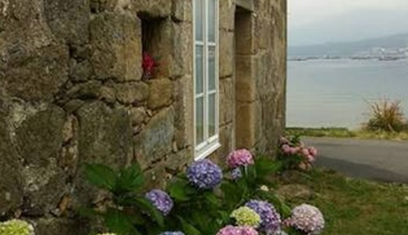
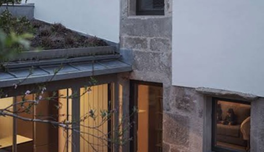
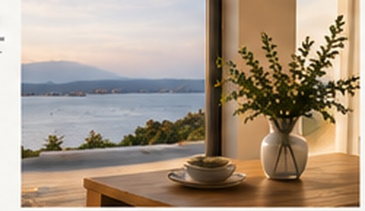
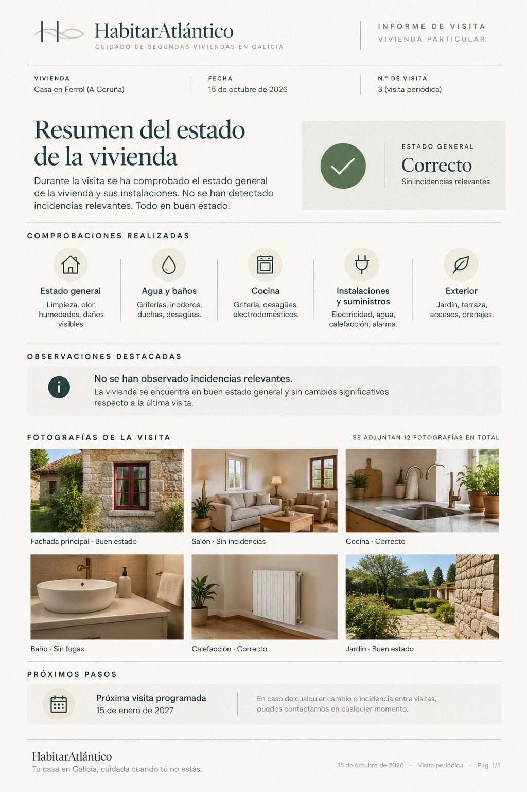

⌂
Home supervision
We check the interior and exterior, look for visible signs of damp, leaks or other issues, and ventilate when appropriate.
Home Watch and care for second homes in Galicia, for owners who live away.
Let’s talk about your home→We adapt the service to your home, its location and the time you spend away.
We check the interior and exterior, look for visible signs of damp, leaks or other issues, and ventilate when appropriate.
If something needs attention, we let you know and help you consider next steps. We coordinate professionals when needed and with your approval.
During visits, we can take care of small tasks such as ventilation, watering plants or checking outdoor areas, according to your home and service plan.
You receive photographs and a clear summary of your home’s condition, including relevant observations and any issues that may need attention.
We adapt visits to your home’s particular needs and priorities, with direct, attentive and transparent communication.
We supervise your home, take care of the details and keep you informed, even when you are away.

We visit it, check it and understand what it needs.
We make sure everything is in order, inside and out.

We manage issues and coordinate trusted professionals.

You receive clear updates, photographs and alerts when needed.
Even when you are away, you’ll have clear information about your home’s condition and anything that needs your attention.
Images of its current condition and any areas worth keeping an eye on.
A clear overview of the general condition and the items reviewed.
If we spot something that needs attention, we’ll let you know and explain the options.
This is an illustrative sample. Each report reflects what was observed during the actual visit.

View larger example ↗I’m Tatiana, the person behind HabitarAtlántico.
For almost a decade I have worked in an environment where responsibility, attention to detail and the ability to handle unexpected situations are part of everyday life.
I created HabitarAtlántico because I understand what it means to have a life far from a home you want to preserve, enjoy and care for.
My goal is simple: when you cannot be there, you know someone is looking after it.
Tell us where your home is, how you use it and what you need. We’ll look at your situation and explain how we can help.